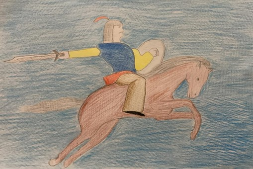

Ben Manas… Dünyanın en hacimli destanının başkahramanı olan Manas… Benimle ilgili anlatılar birleştirildiğinde ortaya yaklaşık bir milyon dizelik muhteşem bir destan çıkar. Merkezinde yer aldığım destan sadece benim mücadelelerimi anlatmaz, oğlumla ve torunumun (Semetey ve Seytek) mücadelelerini de anlatır. Ben Kırgız ülkelerini işgal eden Mançulara, Kalmuklara ve Çinlilere karşı savaştım. Ben doğmadan Kırgız yurtları işgal edilmiş, bütün Kırgız boyları esaret altına girmişti. Gelecekteki babam Cakıp Han’ın boyu da dahil bazı Kırgız boyları esarete son vermek için başkaldırmış fakat yenilmişlerdir. Bunun üzerine düşmanları bu Kırgız boylarını yurtlarından Altay bölgesine sürmüşler. Ben, Kırgız boyları Altay’da sürgündeyken dünyaya geldim. Adımı Manas koydular ama beni ve adımı düşmanların öldürebileceğinden ötürü hep sakladılar. On ki yaşıma geldiğimde güçlü bir Kalmuk kahramanını yenerek kendimi göstermeye başladım. Harekete geçtikten sonra önce Kırgızların sürgün hayatına, daha sonra da esaretine son verdim. Kırgız boylarını bir araya getirdim, çeşitli ülkelere seferler yaparak ülkemin sınırlarını genişlettim. Ölümümden sonra Kırgızlar arasındaki iç çekişmeler arttı, iktidar mücadelesi yeniden başladı. Nitekim benden sonra başa geçen oğlum Semetey ve Seytek dönemlerinde Kırgızlar arasındaki kardeş kavgaları giderek derinleşir.
